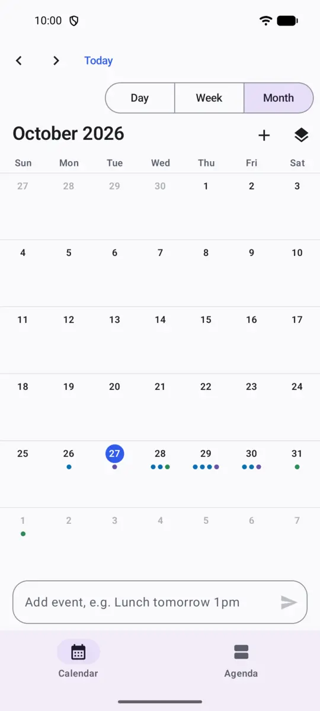

Uses the whole screen
On a tablet you get the full week with a Today panel beside it, and an event's details next to the grid when you pick one. On a phone the week shows three days. Wide windows get a labelled drawer, and you can drag the divider between panes.
Keyboard and mouse work everywhere: shortcuts for every action, right-click menus, Ctrl+scroll to zoom the hours, and Ctrl+P to print the week or save it as a PDF.

Made for foldables
Half open like a book, the week sits on one side of the hinge and today or the event you picked on the other. Flat on a table, the grid is above the fold and the controls below. Nothing is drawn across the crease, and folding or unfolding keeps your place.
On a flip phone's cover screen it becomes one simple day. On tablets and foldables it can open a second window beside itself, and you can drag events between them.
Add events by typing
Write Gym every Mon and Thu at 7pm
or Lunch with Sam tomorrow at 1pm at Cafe Roma
. The words it understood light up as you type, and a line shows exactly what will be saved before you press Enter. Leave out the time and it finds your first free hour.
It understands English and Spanish, and it all runs on your phone.

Your calendars, your phone
Turn on Phone calendars and Quickspan shows the calendars already on your phone, such as Google or Exchange, next to its own. You can add, edit, move and delete events in them, and your phone's account syncs the changes as it always has.
Quickspan asks for calendar access only when you turn this on, and works without it.

Private by design
- No internet permission. The app can't send your events anywhere. You can see this in the permission list on its Play page.
- No account, no ads, no analytics. There is nothing to sign up for and nothing tracking you.
- Your phone's calendars stay with their accounts. If you show a Google or Exchange calendar, it keeps syncing through your phone, not through us.
What it doesn't do (yet)
- No sync of its own between devices. Use a Google or Exchange calendar for that.
- No time zones: times are your phone's local time.
- Quick add understands English and Spanish only.
Tell us what you miss: support@quickspan.app